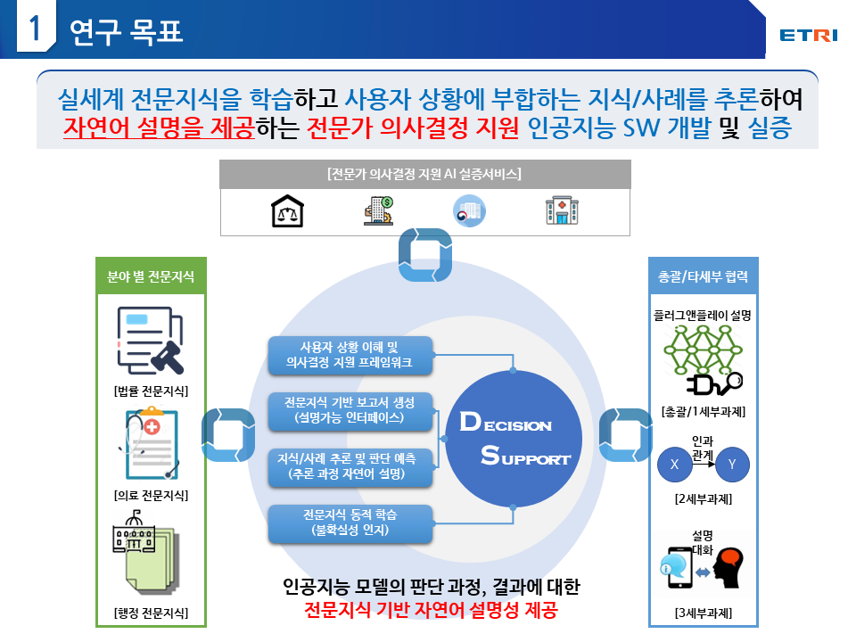
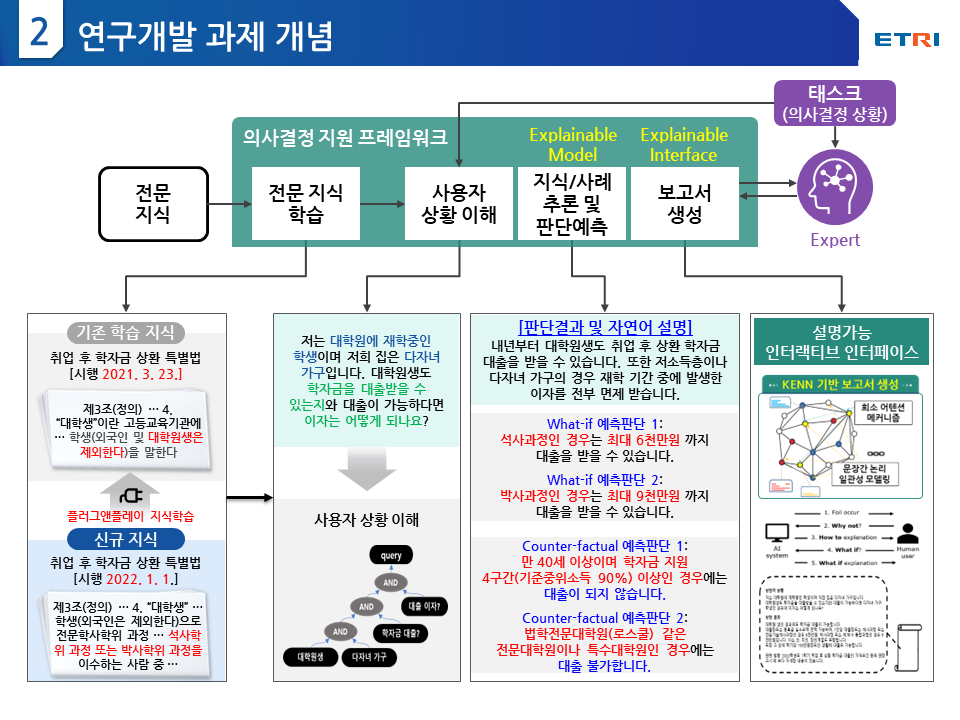
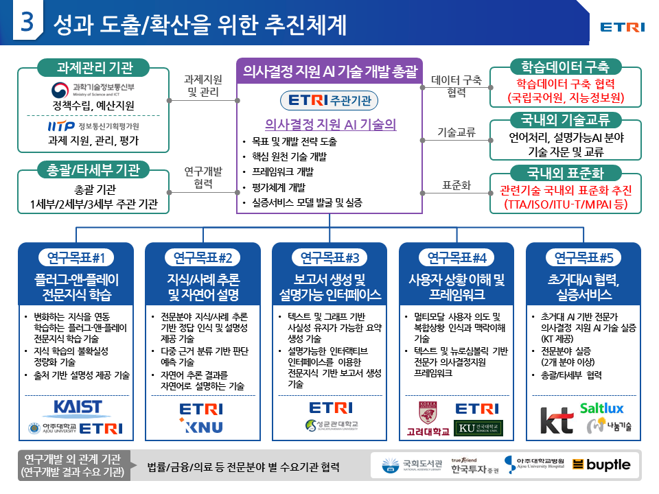
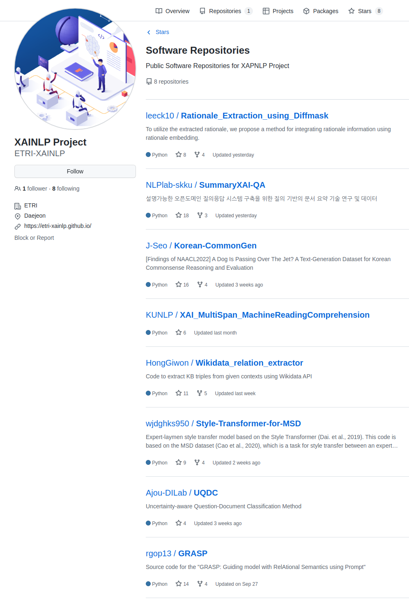

전문가 의사결정 지원 인공지능 기술 개발

기술문의: 배경만 책임연구원 (kyoungman.bae@etri.re.kr)
연구목표

과제개념

추진체계

소프트웨어

Acknowledgement
This research was supported by the Institute for Information &
communications Technology Planning & Evaluation(IITP) grant funded by the
Korea government (MSIT) (no. 2022-0-00369, [Part 4] Development
of AI Technology to support Expert Decision-making that can Explain the
Reasons/Grounds for Judgment Results based on Expert Knowledge)